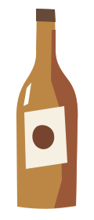
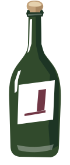
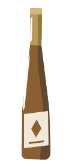
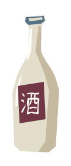

Current production artwork
Compare all eight bottles enlarged or at actual app size. These previews load the production SVGs directly.







Study summaries
The experiments are summarized in one short document. Candidate artwork, galleries, briefs, and contact sheets have been deleted.
Bottle illustrations
Explored 80 candidates. Cut-paper #05 was selected for all eight types, with later silhouette and label refinements.
Person avatars
Ten compositions and a simplified silhouette were shelved. The licensed Unsplash illustration is the production fallback.
Animal avatars
Twelve geometric cat and dog studies, then three softer companions. All were shelved; none is used in the app.
UI and sparkling closures
Ledger was selected over Notebook and Bare. The champagne bottle retained a seated cork, redrawn in the cut-paper style.
UI screenshots
Current captures from a disposable, fictitious demo cellar. Open a thumbnail for the full-size image.